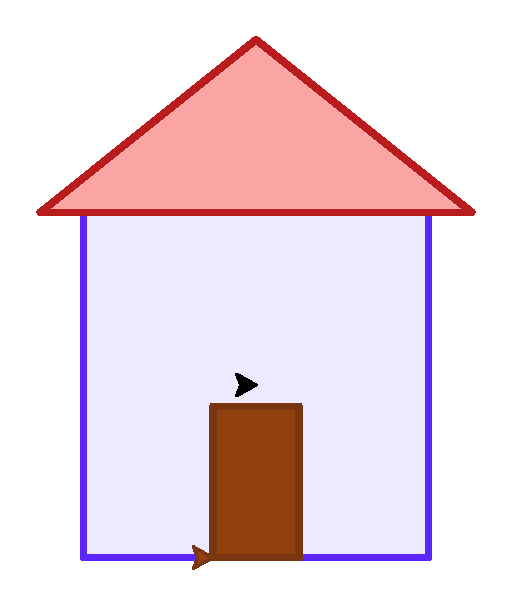
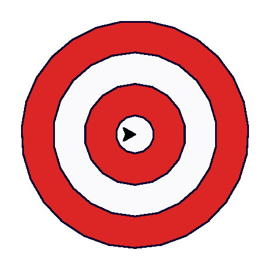
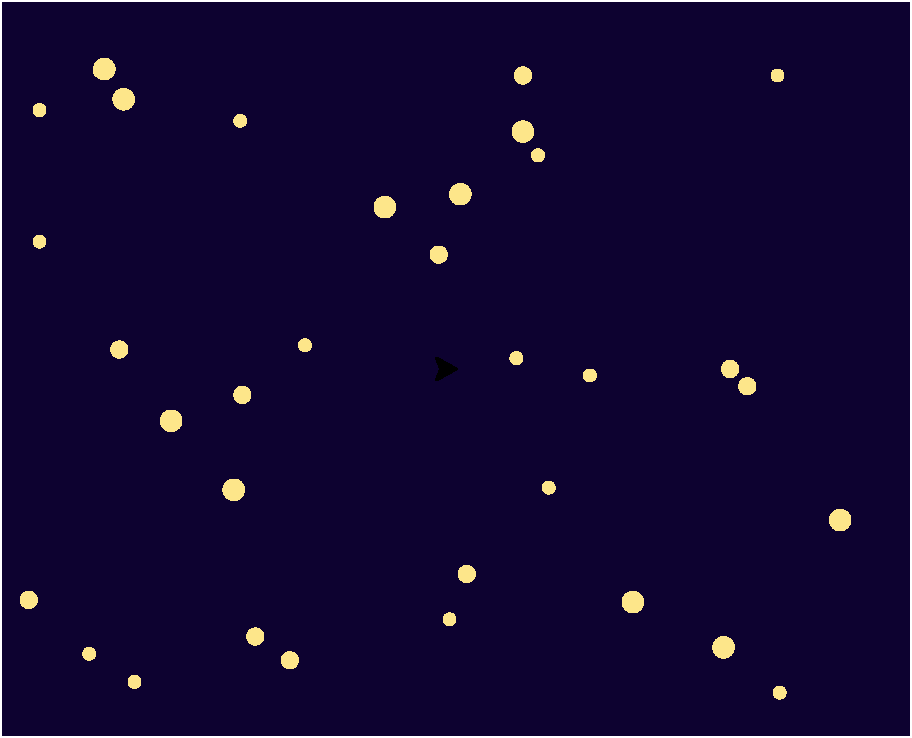
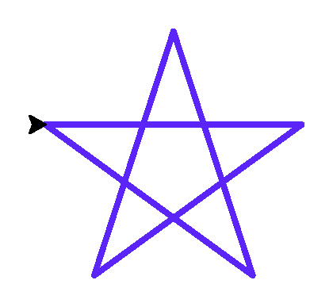

Мини-проекты
Четыре небольших, но по-настоящему готовых проекта — собираем всё, что прошли в этой главе, в законченные картинки.
Четыре небольших, но по-настоящему готовых проекта — каждый использует только то, что мы уже прошли в этой главе. Пятый проект, мандала, ждёт в самом конце главы — это финал.
Проект A: цветной дом
Три отдельные фигуры (стены, крыша, дверь), каждая со своей заливкой, собранные в одну
композицию с помощью penup()/goto()
между ними:
import turtle
screen = turtle.Screen()
screen.setup(width=420, height=420)
artist = turtle.Turtle()
artist.pensize(3)
artist.speed(0)
# стены
artist.penup(); artist.goto(-80, -80); artist.pendown()
artist.pencolor("#5B24F9"); artist.fillcolor("#EDE9FE")
artist.begin_fill()
for _ in range(4):
artist.forward(160)
artist.left(90)
artist.end_fill()
# крыша
artist.penup(); artist.goto(-100, 80); artist.pendown()
artist.pencolor("#B91C1C"); artist.fillcolor("#FCA5A5")
artist.begin_fill()
artist.goto(0, 160)
artist.goto(100, 80)
artist.goto(-100, 80)
artist.end_fill()
# дверь
artist.penup(); artist.goto(-20, -80); artist.pendown()
artist.pencolor("#78350F"); artist.fillcolor("#92400E")
artist.begin_fill()
for _ in range(2):
artist.forward(40)
artist.left(90)
artist.forward(70)
artist.left(90)
artist.end_fill()
screen.exitonclick()
Добавьте квадратное окно в стене дома — ещё один маленький begin_fill()/end_fill() блок.
Проект B: мишень
Четыре окружности одна внутри другой, с уменьшающимся радиусом и чередующимися цветами:
import turtle
screen = turtle.Screen()
screen.setup(width=380, height=380)
artist = turtle.Turtle()
artist.speed(0)
artist.hideturtle()
rings = [(90, "#DC2626"), (65, "#FAFAFC"), (40, "#DC2626"), (15, "#FAFAFC")]
for radius, color in rings:
artist.penup()
artist.goto(0, -radius)
artist.pendown()
artist.fillcolor(color)
artist.pencolor("#0D0230")
artist.begin_fill()
artist.circle(radius)
artist.end_fill()
screen.exitonclick()
rings = [(90, "#DC2626"), (65, "#FAFAFC"), (40, "#DC2626"), (15, "#FAFAFC")]
for radius, color in rings:
artist.penup()
artist.goto(0, -radius)
artist.pendown()
artist.fillcolor(color)
artist.begin_fill()
artist.circle(radius)
artist.end_fill()for по списку пар (радиус, цвет) — мы разберём списки и циклы подробно позже. Пока достаточно увидеть идею: одна и та же последовательность действий повторяется для каждой пары значений.Замените цвета колец на свои — например, оттенки синего и жёлтого.
Проект C: звёздное небо
Тёмный фон, много точек случайного размера в случайных местах — тот же приём, что и в разделе про случайные точки, но с другим настроением:
import turtle
import random
random.seed(11)
screen = turtle.Screen()
screen.setup(width=420, height=340)
screen.bgcolor("#0D0230")
artist = turtle.Turtle()
artist.hideturtle()
artist.penup()
for _ in range(35):
x = random.randint(-200, 200)
y = random.randint(-150, 150)
size = random.choice([6, 8, 10])
artist.goto(x, y)
artist.dot(size, "#FDE68A")
screen.exitonclick()
Добавьте одну большую белую точку в углу экрана — «луну», нарисованную заранее, до случайных звёзд.
Проект D: геометрическая звезда
Пятиконечная звезда рисуется одной линией, без единого отрыва пера — секрет в том, что поворот на 144° (а не на 72°) заставляет линию пересекать саму себя:
import turtle
screen = turtle.Screen()
screen.setup(width=380, height=380)
artist = turtle.Turtle()
artist.pensize(3)
artist.pencolor("#5B24F9")
artist.speed(0)
artist.forward(150)
artist.right(144)
artist.forward(150)
artist.right(144)
artist.forward(150)
artist.right(144)
artist.forward(150)
artist.right(144)
artist.forward(150)
artist.right(144)
screen.exitonclick()
for _ in range(5):
artist.forward(150)
artist.right(144)2 × 360 / 5: чтобы звезда «сложилась» правильно, черепашка должна обойти вокруг центра дважды за пять шагов, а не один раз, как в обычном пятиугольнике.Замените 5 на 7 и 144° на подходящий угол (подсказка: тот же принцип — обойти дважды за семь шагов). Что получится?